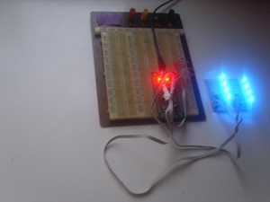
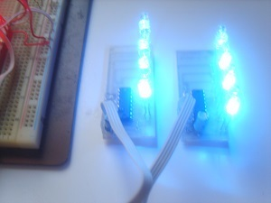
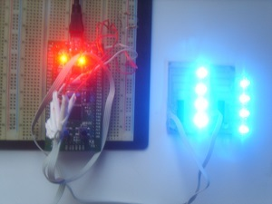

Vous n'êtes pas seuls dans l'Univers !

/
STM32 : Le bus I2C
STM32 : Le bus I2C.
1) Présentation
Le bus I2C est un bus de type série. Le terme «
I2C » signifie :
« Inter Integrated Circuits ».
Il a été créé par la
société PHILIPS en 1982, pour permettre de
connecter plusieurs circuits ensembles, sans pour autant recourir
à un nombre important de connexions entre ces circuits.
Cela permet de simplifier la conception des cartes
électroniques qui mettent en œuvre des composants
compatibles avec le bus I2C.
En effet, le bus I2C n'utilise que trois fils :
- Un fil pour faire transiter des données, nommé « SDA », pour « Serial DAta »,
- Un fil pour faire transiter les signaux d'horloges, afin de synchroniser l'émission ou la réception des données, nommé « SCL », pour « Serial CLock »,
- Un fil de mise à la masse, pour fixer le potentiel électrique servant de référence, nommé généralement « GND ».
De nombreux composants utilisent le bus I2C, parmi lesquels :
- Des microcontrôleurs,
- Des expanseurs de port,
- Des mémoires, dont des mémoires de type EEPROM,
- Des capteurs divers, dont des capteurs de température,
- Des circuits de gestion audio,
- Des circuits de gestion de boucles à verrouillage de phase ( « Phase - Looked Loop » - « PLL » ).
2) Le bus I2C et le STM32F100RB
3) Exemples de mises en œuvre, en tant que « Maître »
3-1) Routines de lecture-écriture
3-2) Utiliser des expanseurs de ports I2C
Les expanseurs de port I2C sont des composants qui permettent d'ajouter des entrées-sorties à un microcontrôleur, qui dispose d'une liaison I2C activée.
Pour en savoir plus sur les expanseurs de port I2C, ouvrez ce lien.
Exemple mettant en œuvre deux cartes à expanseurs PCF8574, un expanseur MCP23017 et une carte de développement de type « STM32VLDISCOVERY », équipé d'un microcontrôleur « STM32F100RB ».
Les connexions entre les expanseurs et la carte de développement sont indiquées dans le tableau ci-après.
Les broches « PB6 » et « PB7 » sont reliées au + 5 volts par des résistances de tirage de 1 kilo Ohm.
| Carte de développement « STM32VLDISCOVERY » | +5V | 0V | PB6 | PB7 |
|---|---|---|---|---|
| Circuits intégrés PCF8574 | +5V | 0V | SCL | SDA |
| Circuit intégré MCP23017 | +5V | 0V | SCL | SDA |
|  |  |  |
{kind=link}
{kind=link}
{kind=link}

Communiquer avec des expanseurs de port I2C : Fichier C
Cible : STM32F100RB
Compilateur : Keil µVision4
Télécharger le fichierEffectuez un clic droit, puis sélectionnez l'option « Enregistrer la cible du lien sous... », pour télécharger le fichier (3.11 Ko)
3-3) Utiliser des capteurs de température I2C
Pour en savoir plus sur les sondes de température utilisées, ouvrez ce lien.
Les exemples donnés ci-après mettent en œuvre deux sondes de température différentes :
- Le composant TMP100, fabriqué par Texas Instruments,
- Le composant TCN75A, fabriqué par Microchip.
 La datasheet de la sonde de température TMP100 et TMP101,
La datasheet de la sonde de température TMP100 et TMP101,- La datasheet de la sonde de température TCN75A.
{kind=link}
Communiquer avec des capteurs de température I2C : Fichier C
Cible : STM32F100RB
Compilateur : Keil µVision4
Télécharger le fichierEffectuez un clic droit, puis sélectionnez l'option « Enregistrer la cible du lien sous... », pour télécharger le fichier (2.89 Ko)
Commentaires (0)
Ajouter un commentaire